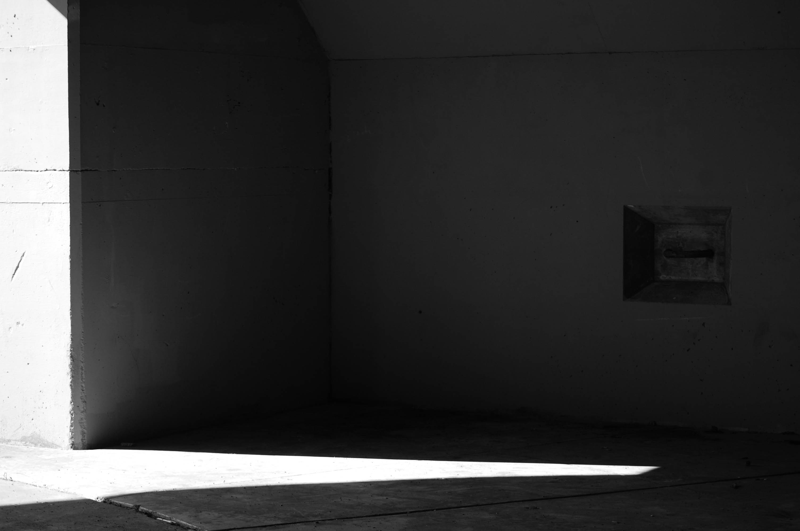
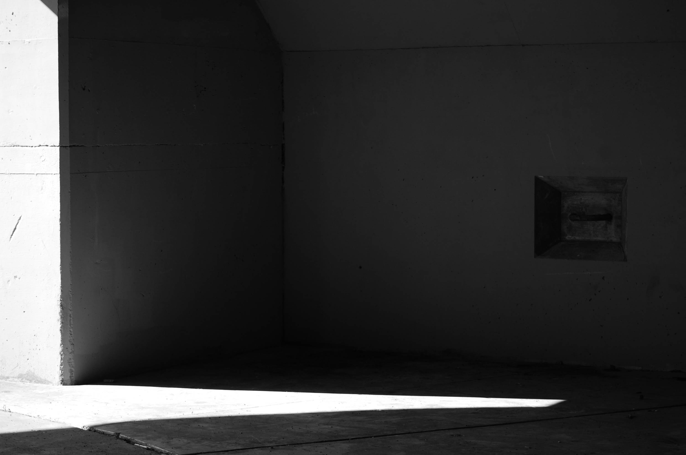
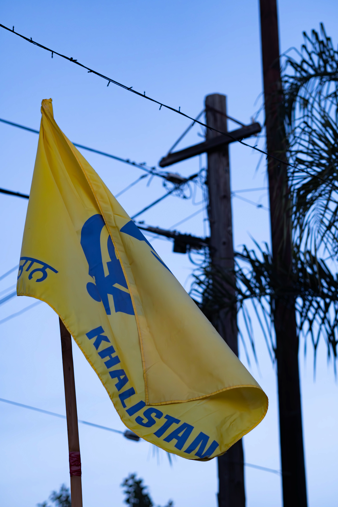
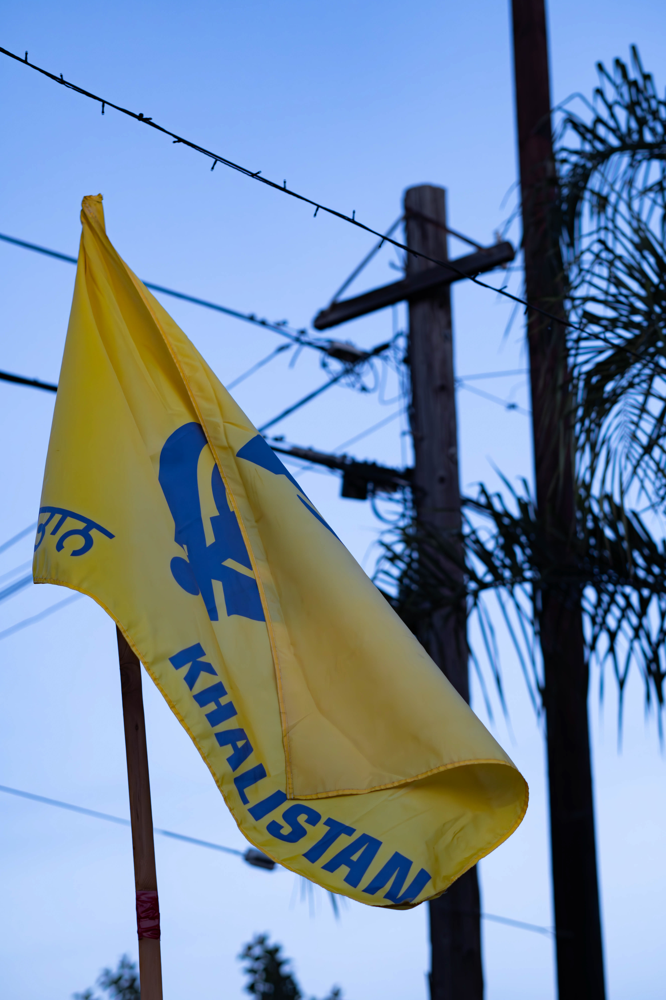
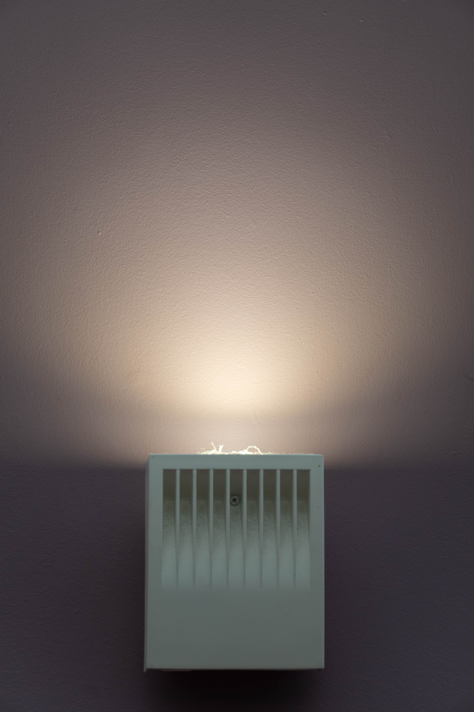
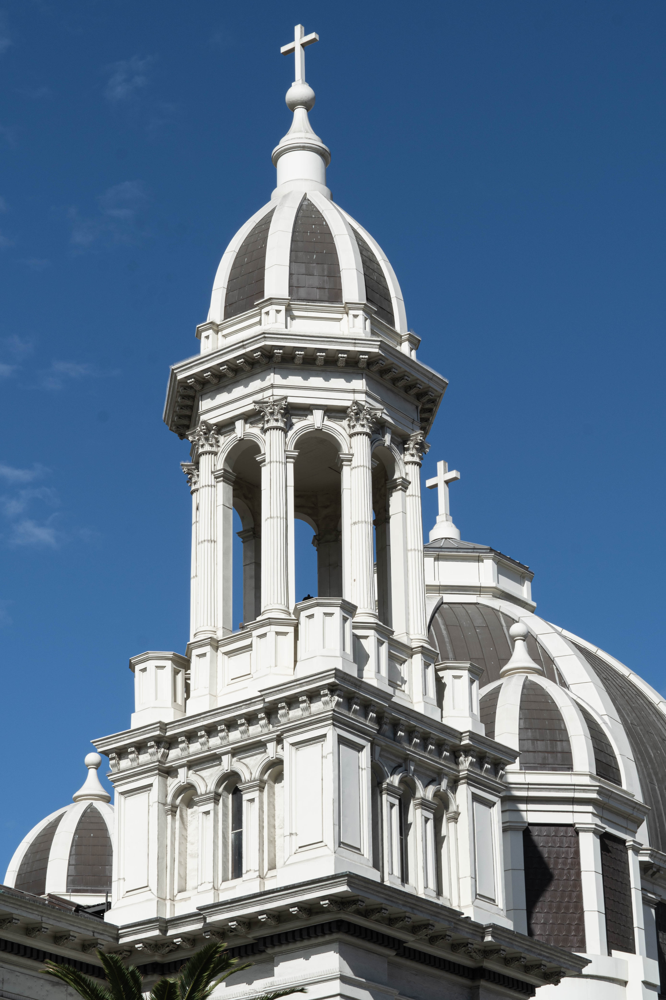
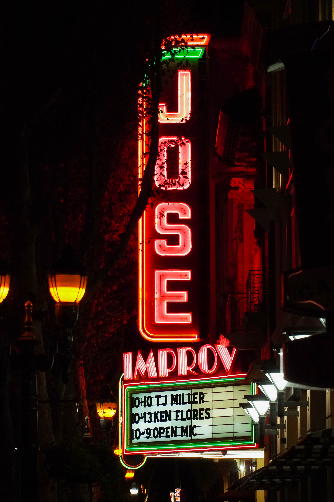
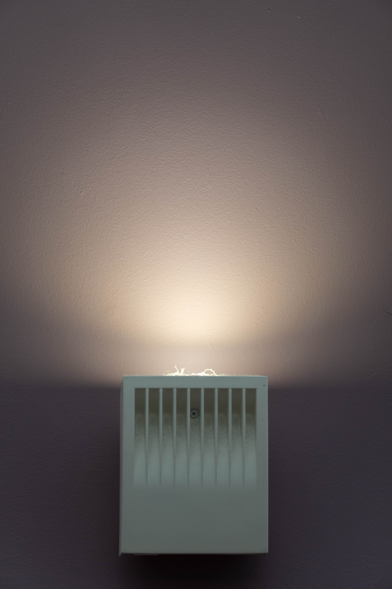
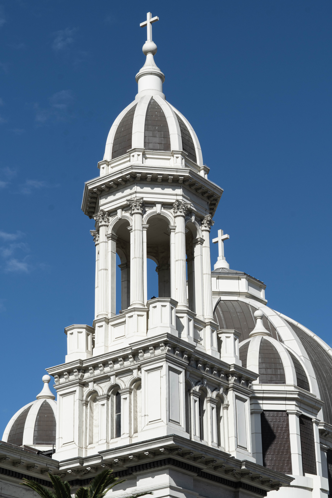
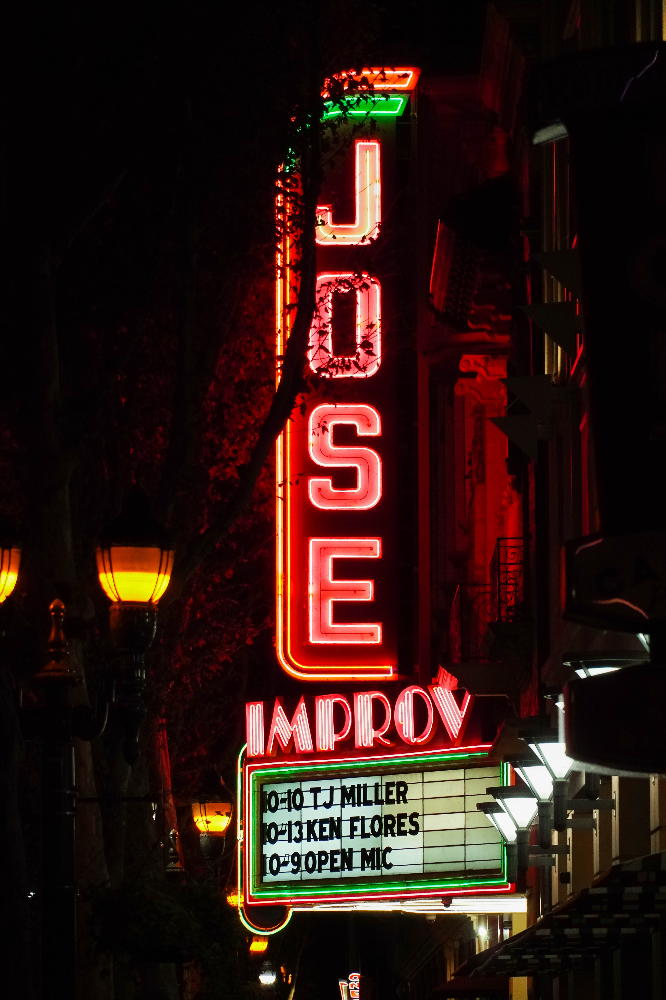

SAN
FRAN
CSICO CA
A name isn't just a label. It's a journey — of transformation, meaning, and self-definition.
Herbert Siegfried Marshutz, c. 1880s
A Brief Family History
Herbert Siegfried Marshutz, my great-grandfather, established an optometry shop in Los Angeles during the early 20th century. More than just an optical business, his store offered a range of specialized goods—including photographic equipment—that would leave a lasting legacy. His son, Roger Marshutz, later drew upon these tools and environment to pursue photography, eventually gaining recognition for his work, most notably his iconic photograph of Elvis Presley.
Left: the original optometry shop. Right: Elvis Presley in concert.
FEATURED PROJECTS
Around the World
Illustration, 2018
Home
Photography, 2020
UCSC Diversity
Sculpture, 2024
Due North
Sculpture, 2024
Make America Trash Again
Sculpture, 2025

ਪਿਆਰ (Love)
Photography, 2025

The Cost of a Minute
Film/Animation, 2025
Memories
Augmented Reality, 2025
Portfolio Website
2025
Refreshed
Photography, 2025
Drowning
Kresge Project Proposal, 2025
Running on Empty
Sculpture, 2025
 



 



 






EXPERIENCE
Advanced Repair Agent
Geek Squad
B.A. in Art
University of Santa Cruz
Trade Show Manager
Emerald Sky
Brand Representative
Emerald Sky
Barista
Contraband Coffee